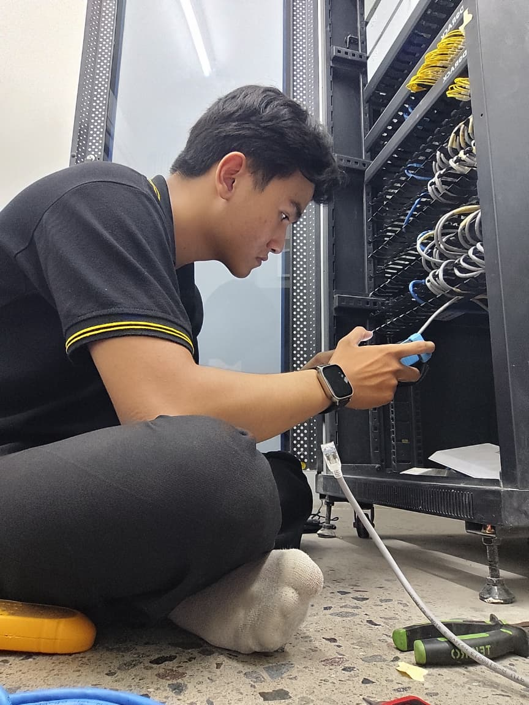

Pengalaman Kerja Profesional

CV. Animo Restu Semesta
Technical Network | Technical CCTV | Technical Maintenance
Bekerja di perusahaan yang bergerak di bidang Electronic & IT Solutions. Bertanggung jawab langsung dalam instalasi, pemeliharaan, serta penanganan masalah teknis (troubleshooting) untuk sistem jaringan dan keamanan elektronik di Hotel, Villa, Resort, dan Apartement.
Cakupan Layanan & Sektor Pekerjaan
Saya berpengalaman menangani kebutuhan infrastruktur teknis di berbagai sektor industri:
Network Installation & Configuration
Pemasangan dan konfigurasi router/access point MikroTik, Ruijie | Reyee, serta TP-Link | Omada.
CCTV Systems
Instalasi unit baru, perbaikan, dan pemeliharaan rutin jaringan CCTV.
IP PABX & Fire Alarm
Konfigurasi sistem komunikasi telepon internal dan instalasi sistem proteksi kebakaran.
Technical Maintenance
Pemeliharaan berkala untuk menjamin stabilitas perangkat elektronik dan jaringan IT klien.